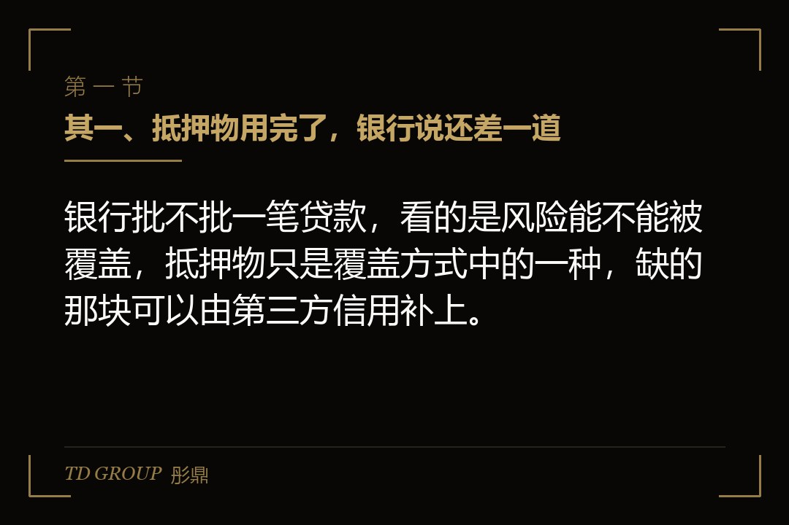
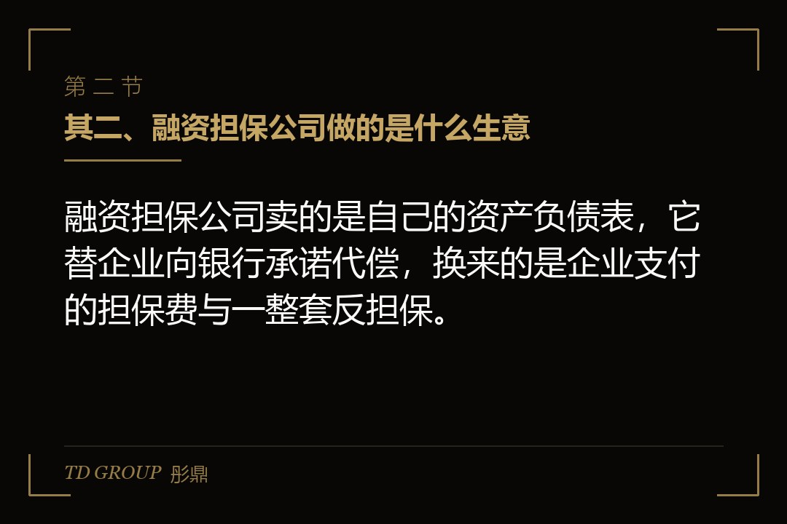
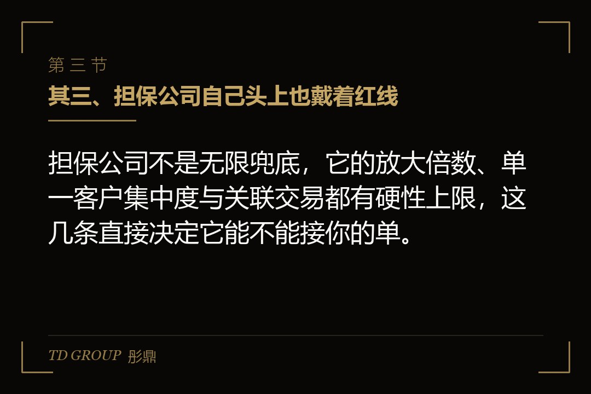
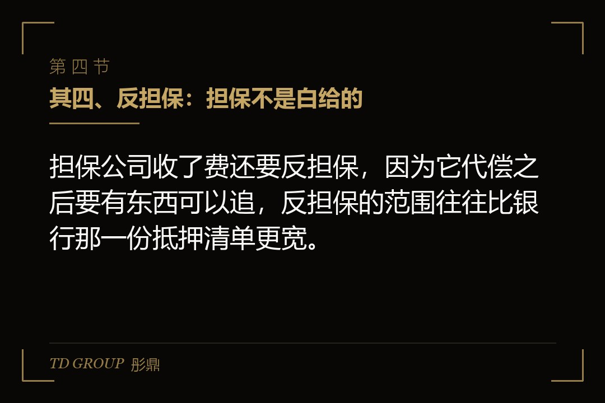
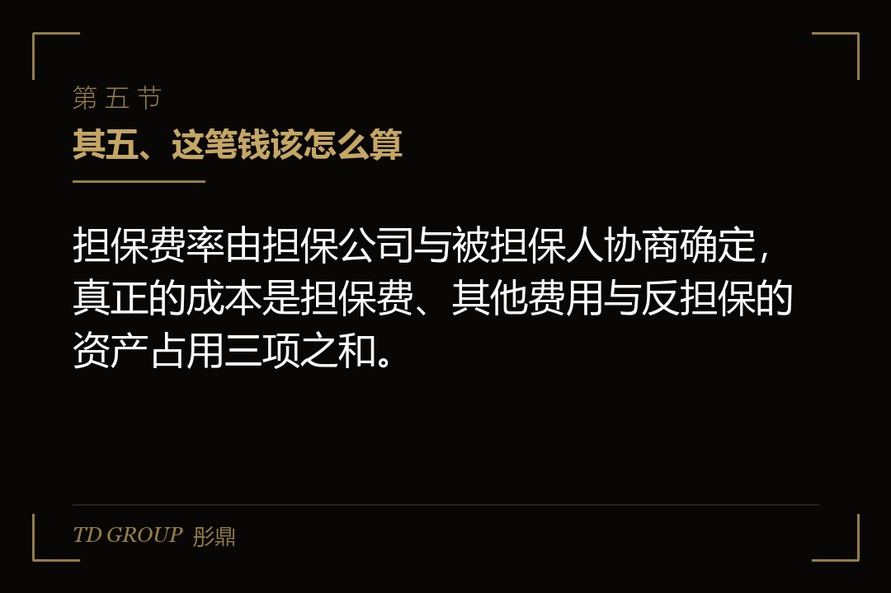
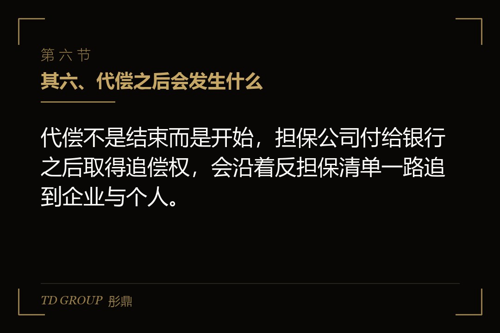
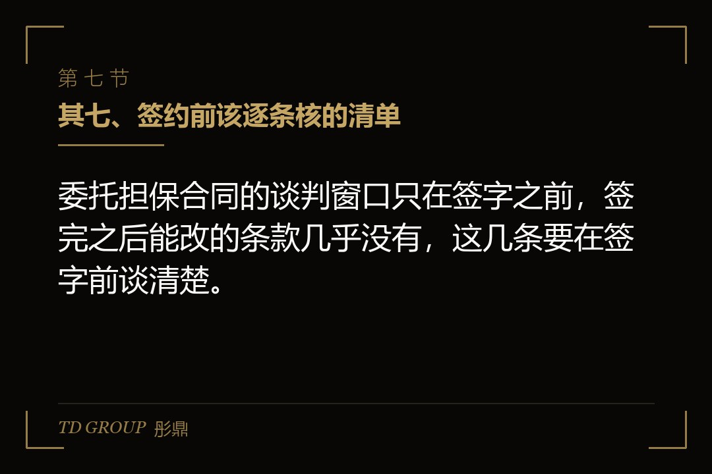

其一、抵押物用完了，银行说还差一道

结论先行：银行批不批一笔贷款，看的是风险能不能被覆盖，抵押物只是覆盖方式中的一种，缺的那块可以由第三方信用补上。
假设一家做汽车零部件的制造企业，年中拿到一笔八千万元的年度供货合同，需要三千万元周转资金采购原材料、支付人工。企业的厂房已经在上一笔贷款里抵押给银行，主要设备在前年做过售后回租，能拿出来的干净资产只剩一批账期九十天的应收账款。
银行给的答复不是不批，而是缺口部分需要追加担保：要么找一家有实力的企业作保证人，要么找一家融资担保公司出具担保。老板的头一个反应通常是担保公司收费太贵，而真正的成本不在那笔担保费上，在于担保公司为了给自己兜底，会要求企业押出去什么。
理解这一点，是理解这笔买卖的起点：企业买到的是担保公司的信用，付出的是自己的资产、资产的流动性，以及代偿之后被追偿的风险。
其二、融资担保公司做的是什么生意

结论先行：融资担保公司卖的是自己的资产负债表，它替企业向银行承诺代偿，换来的是企业支付的担保费与一整套反担保。
按条例第十二条，融资担保公司除经营借款担保、发行债券担保等融资担保业务外，经营稳健、财务状况良好的，还可以经营投标担保、工程履约担保、诉讼保全担保等非融资担保业务，以及与担保业务有关的咨询等服务业务。对借钱的企业来说，用得上的主要是借款担保这一块。
流程不复杂：企业与银行谈妥贷款条件但担保不足，向担保公司提出委托担保申请，担保公司做项目评审，看经营、看财务、看反担保，评审通过后与银行签订保证合同、与企业签订委托担保合同，银行放款。企业拿到的仍然是银行的贷款，只是还款承诺上多了一个签字的人。
差别在这儿：企业之间互相担保，是把风险留在自己的圈子里；担保公司则是把风险转移给一个专门经营风险的机构，收费是明码的，代价也是明码的。
其三、担保公司自己头上也戴着红线

结论先行：担保公司不是无限兜底，它的放大倍数、单一客户集中度与关联交易都有硬性上限，这几条直接决定它能不能接你的单。
第十五条规定，融资担保公司的担保责任余额不得超过其净资产的10倍；对主要为小微企业和农业、农村、农民服务的融资担保公司，倍数上限可以提高至15倍。这是它业务总量的天花板，净资产十亿元的机构，在保余额的上限是一百亿元。
第十六条是集中度：对同一被担保人的担保责任余额与融资担保公司净资产的比例不得超过10%，对同一被担保人及其关联方的担保责任余额与净资产的比例不得超过15%。这一条解释了很多"为什么被拒"。一家净资产十亿元的担保公司，对单个企业及其关联方的在保余额上限是一亿五千万元；集团内部多个主体同时申请时会被合并计算，额度在不知不觉中就用到头了。
第十七条是关联交易：融资担保公司不得为其控股股东、实际控制人提供融资担保；为其他关联方提供融资担保的条件，不得优于为非关联方提供同类担保的条件，并应自提供担保之日起30日内向监督管理部门报告，在会计报表附注中予以披露。
对企业来说，这三条的意义是：问一家担保公司能不能做，先问它净资产多少、在你这个客户名下已经占了多少，这比谈费率更早决定成败。
其四、反担保：担保不是白给的

结论先行：担保公司收了费还要反担保，因为它代偿之后要有东西可以追，反担保的范围往往比银行那一份抵押清单更宽。
条例第二十条写明，被担保人或者第三人以抵押、质押方式向融资担保公司提供反担保，依法需要办理登记的，有关登记机关应当依法予以办理。实务里的反担保清单通常比银行贷款的担保清单长：房产与土地使用权抵押、设备抵押、应收账款质押、股权质押、存货监管，以及最常被加上去的头一条——实际控制人及其配偶的个人连带责任保证。
最后这一条最容易被低估。它的意思是：公司还不上、担保公司代偿之后，担保公司可以直接追到个人名下。所谓有限责任，在这份合同面前只挡住了公司这一层。
另一种做法是第三人保证，让关联公司或者上下游的核心企业一起签。企业往往觉得这是顺手帮忙，可从担保的角度看，这是把风险重新扩散回自己的圈子，跟互保链的问题是一样的。
其五、这笔钱该怎么算

结论先行：担保费率由担保公司与被担保人协商确定，真正的成本是担保费、其他费用与反担保的资产占用三项之和。
条例第十九条：融资担保费率由融资担保公司与被担保人协商确定；纳入政府推动建立的融资担保风险分担机制的融资担保公司，应当按照国家有关规定降低对小微企业和农业、农村、农民的融资担保费率。也就是说，市场化机构的费率是谈出来的，而政府性担保机构对小微有降费要求，这是两类机构最实质的一项差别。
配套制度还要求，担保公司应将向被担保人收取的所有费用与担保金额的比例折算为按年计算的综合费率，并在委托担保合同中逐项载明；存在合作机构收取保险、服务等费用的，应以书面形式向被担保人如实、完整告知。这是企业谈判时最有力的工具：把所有费用摊开、按年折算，才知道这笔钱到底贵不贵。
反担保的资产占用也是成本。一批应收账款质押给担保公司之后，这笔资产短期内不能再拿去做保理，也不能再质押给第二家。算成本时要把这层流动性代价一并算进去，只看担保费率会低估。
其六、代偿之后会发生什么

结论先行：代偿不是结束而是开始，担保公司付给银行之后取得追偿权，会沿着反担保清单一路追到企业与个人。
条例第十三条要求融资担保公司建立健全融资担保项目评审、担保后管理、代偿责任追偿等方面的业务规范与内部控制制度。代偿是它的常规业务动作，不是事故。代偿发生后通常三件事连着来：其一，担保公司向银行履行保证责任，企业征信记录上留下代偿信息；其二，担保公司处置反担保物，或起诉要求实际控制人承担连带保证责任；其三，银行对企业名下其他贷款重新评估，可能触发提前收贷条款。
第三件最致命。一笔三千万元的贷款代偿，冲击的往往不是这三千万元，而是企业全部存量授信的稳定性。多家银行同时收紧的时候，账上再健康的经营现金流也扛不住。
因此，担保买的是时间，不是免死金牌。它接上的是订单与回款之间的时间差；如果企业的回款周期本身长过贷款期限，加一家担保公司只是把这个错配往后推一期。
其七、签约前该逐条核的清单

结论先行：委托担保合同的谈判窗口只在签字之前，签完之后能改的条款几乎没有，这几条要在签字前谈清楚。
头一条是担保责任的口径：是连带责任保证还是一般保证，担保范围包不包含利息、罚息、复利与实现债权的费用。范围每宽一行，代偿时多付的可能是本金的百分之十几。
第二条是反担保清单及其解除条件。部分还款之后对应的反担保物能不能分批解押，解押的触发条件与办理时限写没写。只写解除不写时限，实践中几乎等于没写。
第三条是所有费用的逐项列明，以及按年折算的综合费率。合同里只写担保费率、其余靠口头承诺的，一律要求补进书面。
第四条是代偿之后追偿的顺序与宽限期。是先处置抵押物还是先追个人保证，代偿后给不给企业一段处置资产的窗口期，这一条谈下来往往比费率更有用。
第五条是担保公司本身的资质与经营状况：融资担保业务经营许可证在不在有效期内，净资产与在保余额是多少，监管评级与有无重大处罚。企业在这笔交易里是拿自己的资产去换对方的信用，对方的信用值多少钱，签约前就该查清楚。
华尔街彤鼎俱乐部在与企业方交流时常说一句话：担保费是明码的，反担保是没标价的；把反担保清单读懂，比把担保费率谈下二十个基点重要得多。这笔账要倒过来算，先看自己押出去什么，再看对方收多少。
---
本文为知识梳理，不构成专业意见或收益承诺。文中所涉监管规则以现行有效的《融资担保公司监督管理条例》及其配套制度、所在地实施细则为准，具体担保条件须向担保公司与专业机构核实。